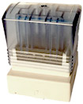

Stampcreator PRO производства фирмы BROTHER
|
|
 Программа для прорисовки эскизов будущей печати позволяет нарисовать любое изображение или импортировать его в большинстве графических форматов. Заправленный штамп создается в считанные минуты (в оснастку вмонтирована капсула с краской, которая разрушается при соединении деталей рукоятки печати). Материал печати - микропористая резина, пропитанная краской. Использование данного материала имеет ряд преимуществ:
Программа для прорисовки эскизов будущей печати позволяет нарисовать любое изображение или импортировать его в большинстве графических форматов. Заправленный штамп создается в считанные минуты (в оснастку вмонтирована капсула с краской, которая разрушается при соединении деталей рукоятки печати). Материал печати - микропористая резина, пропитанная краской. Использование данного материала имеет ряд преимуществ: Неограниченные возможности
Новая революционная система - самый быстрый и самый легкий способ изготовления штампов... и прибыли!
Вы можете мгновенно изготовить профессиональные, по индивидуальному эскизу, уже заправленные штампы.
- Идеально для создания собственного бизнеса
- Идеально для полиграфических салонов, которые хотят добавить услугу "штампы по требованию"
- Идеально для изготовителей печатей, которые хотят максимально увеличить "экспресс-услуги" на минимальном пространстве.
Размеры штампов и время изготовления
(После создания, штампу необходимо время для пропитки чернилами, прежде чем он будет готов к использованию. Как правило оно не превышает двух часов)
|  | PR-1212 - 12мм х 12мм - 1.4 кв.см PR-2020 - 20мм х 20мм - 4.0 кв.см PR-1438 - 14мм х 38мм - 5.3 кв.см PR-1060 - 10мм х 60мм - 6.0 кв.см PR-3030 - 30мм х 30мм - 9.0 кв.см PR-1850 - 18мм х 50мм - 9.0 кв.см PR-2260 - 22мм х 60мм - 13.2 кв.см PR-4040 - 40мм х 40мм - 16.0 кв.см PR-2770 - 27мм х 70мм - 18.9 кв.см PR-3458 - 34мм х 58мм - 19.7 кв.см PR-4090 - 40мм х 90мм - 36.0 кв.см |
- Чистота: Нет пачкающихся чернильных подушечек
- Простота: Делает печать в считанные минуты
- Высокое качество: Разрешение 600 точек на дюйм, печать действует на 50.000 оттисков
Система профессионального изготовления штампов. Всего шесть простых шагов
Brother разработал и довел до совершенства абсолютно новый и револьюционный путь перенесения изображений на поверхность ленты штампа. После того, как вы создадите изображение на вашем компьютере и вставите текст, остальной процесс займет всего несколько минут. Вы никогда не испачкаетесь чернилами, это абсолютно чистый и сухой процесс.
1. Загрузите Stamp Editor на вашем РС и затем создайте желаемое изображение.
2. The Stampcreator PRO немедленно перенесет изображение, созданное на экране вашего компьютера, на прозрачную пленку, которая может быть заряжена автоматически из внутреннего лотка кассеты. Печать способом термопереноса с разрешением 600 точек на дюйм воспроизведет каждую деталь с вашего графического устройства. Откройте на экране РС окно для просмотра в позитиве образца вашего штампа, расположенного над блоком с ксеноновой лампой-вспышкой.
3. Поместите бланк штампа в отсек для создания штампов блоком с ксеноновой лампой-вспышкой.
4. Когда дверца отсека создания штампов закроется, the Xenon Flash автоматически защелкнется.
5. Поверхность штампа изготовлена из легкого восприимчивого каучука, специально разработанного для Brother StampcreatorPRO. Под воздействием света от the Xenon Flash миллионы микропор на поверхности штампа закрываются. Только поры защищенные черными чернилами в позитиве остаются открытыми.
6. Присоедините ручку к штампу и чернила попадут в основание штампмашины. Подержите штамп вертикально несколько минут, чтобы чернила подсохли. После появления сообщения "Cure time", чернила поглощаются штампом и он готов к использованию. Идентификационный ярлык может быть напечатан таким же образом аппаратом The Stampcreator PRO.
- Программное обеспечение
- PC и MAC® совместимое
- Исчерпывающая графическая совместимость
- Функции рисования (рамки, линии и окружности)
- Использует все true type шрифты Вашей системы
- 11 размеров окон редактора, под размеры штампов
- Более чем 150 заготовок штампов (автоформатирование)
- Импорт графических файлов:
- PC (BMP, TIF, JPEG, GIF, ICO, DIB, WMF)
- MAC (BMP, TIFF, JPEG, PICT)
- Поддержка шкалы серого цвета
- Сотни рисунков, изображений и рамок
- Устройство
- Разрешение 600 точек на дюйм
- Создаётся высококачественная идентификационная метка штампа
- Магазин держатель для плёнок
- Высококачественная Xenon лампа - вспышка
- Легко управляется переключателями + ЖКИ дисплей
- Автоматическое определение размера штампа
- В комплект входит параллельный и последовательный кабель для подключения к РС
- Характеристики штампа
- 11 размеров штампов (от 12x12 мм до 40x90 мм)
- 4 цвета чернил
- Прочная резиновая поверхность
- Нетоксичные, невоспламеняемые, быстросохнущие чернила
- С возможностью дозоправки чернил, до 50,000 оттисков
- Особенности штампа:
- 11 размеров штампов;
- Разрешение 600 dpi;
- Заправленный (без отдельной штемпельной подушки) для получения сухого и четкого изображения;
- При правильной заправке чернил штамп сможет сделать 50.000 оттисков практически неизменно.
- Особенности поверхности штампа:
- Микро-рельефное изображение даст вам всегда точный четкий оттиск;
- Очень прочный каучук;
- Плавная работа штампа;
- Микропористая структура позволяет создавать одинаковое изображение каждый раз.
- Особенности лампы Xenon:
- Легко заменяемый блок для повторного использования;
- Создание приблизительно 2.000 штампов с каждого блока
- Особенности системы создания позитивного изображения:
- Картридж термопечати для создания 150 штампов;
- 150 образцов форм.
- Особенности чернил для штампа:
- Оригинальные чернила для штампа разработаны для Stampcreator PRO;
- Быстро высыхают;
- Не смываются.
- Безопасны:
- Не воспламеняются (точка возгорания > 150 C/302 F);
- Cоответствуют стандарту LHAMA.
- Особенности спецификации аппарата:
- Технология Xenon Flash + Микропористый каучук;
- Последовательный и параллельный интерфейс;
- Простота использования;
- Создание заправленного штампа в считанные минуты;
- Профессиональное качественное разрешение 600 dpi;
- Создание идентификационного ярлыка;
- Кассета на 50 мастер-пленок (эскиз в позитиве);
- Идентификационный ярлык вставляется и закрывается.
- Особенности программного обеспечения:
- PC Windows 95, 98 и NT совместимый;
- Принимает файлы BMP, TIF, JPEG, GIF, ICO, DIB, WMF;
- Поддерживает все True Type fonts;
- Поддерживает цифровые фото;
- Превосходная графика;
- Более 150 профессиональных трафаретов для штампа.
- Технические особенности:
- Требуемое напряжение% 220V - 240V, 50Hz, 1.0A
- Комплектность:
- Аппарат SC-2000;
- Кассеты для держания эскиза;
- Набор эскизов для создания первых 150 штампов;
- 5 штампов;
- ПО для Windows 95, 98/NT 4.0 (CD ROM & 3.5" FDD);
- Последовательный кабель для Windows;
- Чистящее перо для печатающей головки;
- Руководство пользователя;
- Перо для коррекции штампа;
Позволяет добиться высокой разрешающей способности (до 2000 dpi) отпадает необходимость в штемпельной подушке печать не имеет рельефа и практически не подвержена износу имеется возможность изготавливать многоцветные печати технология производства печатей максимально автоматизорована
Габариты: 470х220х170мм
масса 11 кг.